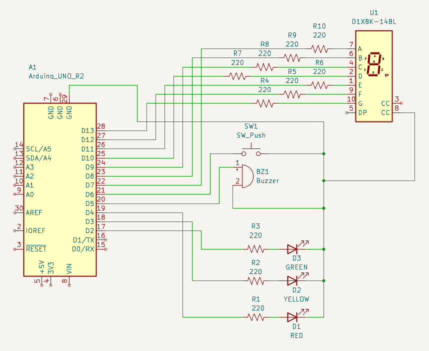

Sistem Simulasi Penyebrangan Jalan Otomatis
Pedestrian Crossing Simulation System with Arduino
Problem
Tingginya potensi insiden lalu lintas di titik penyeberangan akibat ketidakteraturan jeda waktu antara kendaraan dan pejalan kaki, serta minimnya indikator waktu tunggu dan sinyal aksesibilitas audio.
Solution
Merancang sistem simulasi lalu lintas cerdas yang mengintegrasikan lampu sinyal kendaraan, display hitung mundur (countdown 7-segment), serta buzzer peringatan suara yang dipicu melalui tombol penyeberang.

Mengendalikan seluruh logika I/O pada pin digital D2 hingga D13 dan menyediakan bus grounding (GND).
Menampilkan sisa waktu penyeberangan. Dihubungkan ke pin D7–D12 dengan resistor pembatas arus R4–R10 (220Ω).
D1 (Red), D2 (Yellow), D3 (Green) terhubung ke pin D4, D3, D2 masing-masing diproteksi resistor R1–R3 (220Ω).
Buzzer pada pin D5–D6 memberikan sinyal suara aman menyeberang, dipicu melalui tombol tekan SW1 pada pin D13.
Peran & Kontribusi Saya
- Perancangan Skematik & Wiring: Menyusun skema rangkaian lengkap, menentukan pemetaan pin Arduino, dan mengalokasikan nilai resistor 220Ω untuk mencegah beban arus berlebih (overcurrent).
- Integrasi Komponen I/O: Menghubungkan modul 7-segment display Common Cathode, 3 LED lalu lintas, buzzer peringatan, serta push button ke jalur ground bersama.
- Pemrograman Logika Kontrol: Menulis instruksi kendali siklus lampu lalu lintas, algoritma multiplexing/dekode segmen display, serta frekuensi bunyi buzzer.
- Analisis & Troubleshooting: Menguji alur sinyal logika, kestabilan jalur perkabelan (wiring harness), dan respon pemicu tombol.
Fitur Utama Sistem
Hasil & Verifikasi
Skematik dan prototipe simulasi penyeberangan jalan berhasil memvalidasi seluruh fungsionalitas: transisi warna lampu berjalan tertib, display 7-segment menampilkan countdown secara akurat, buzzer memberikan indikasi suara yang jelas, dan seluruh jalur wiring terproteksi oleh resistor 220Ω tanpa risiko korsleting.